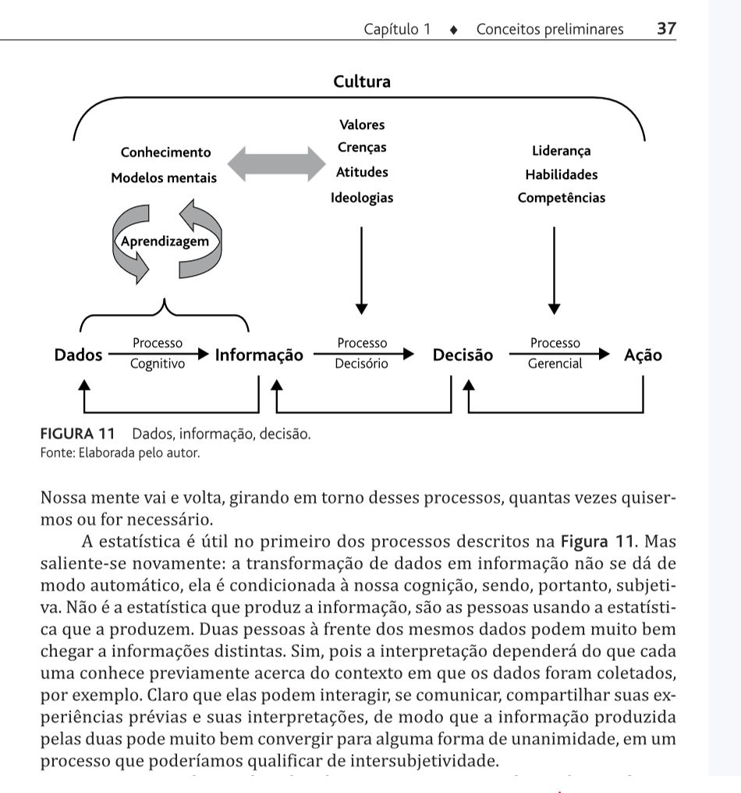
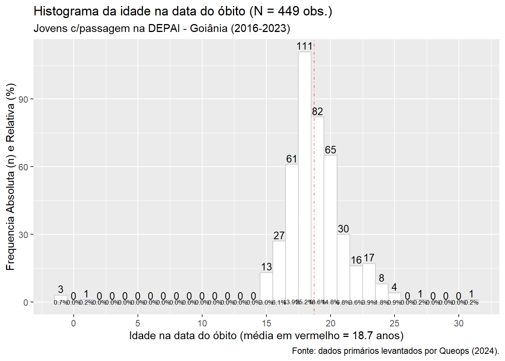
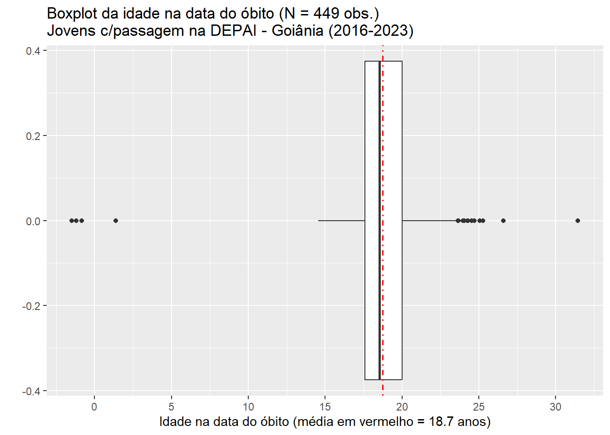
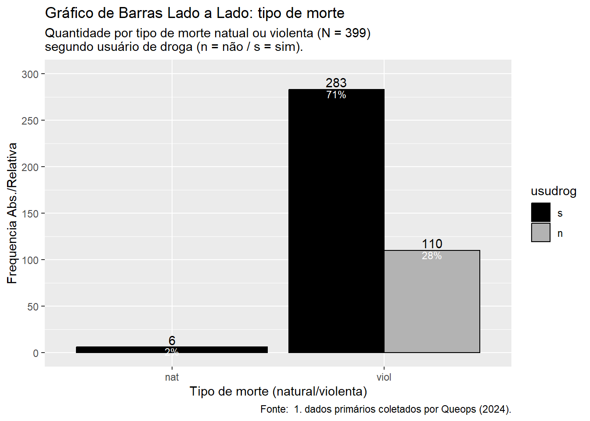
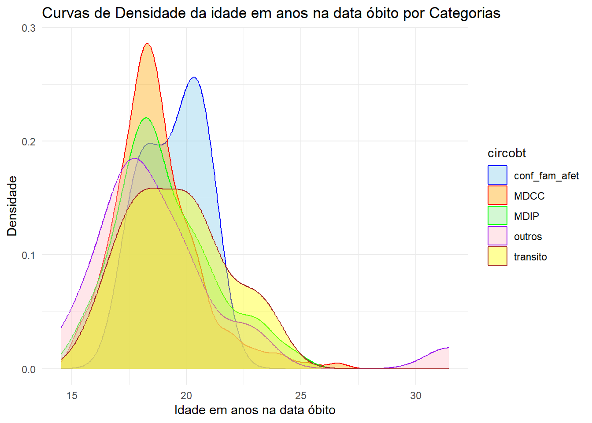
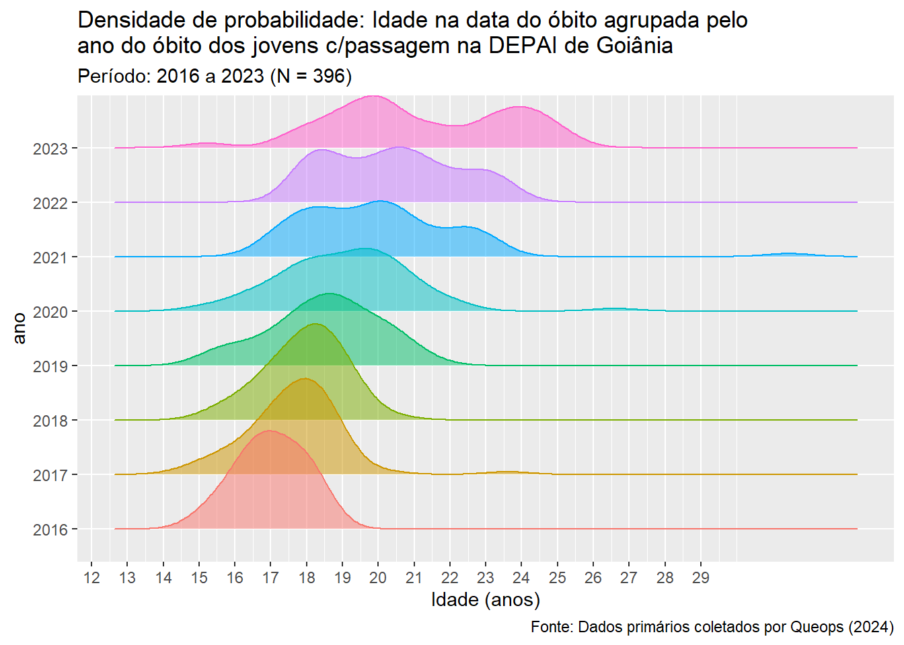
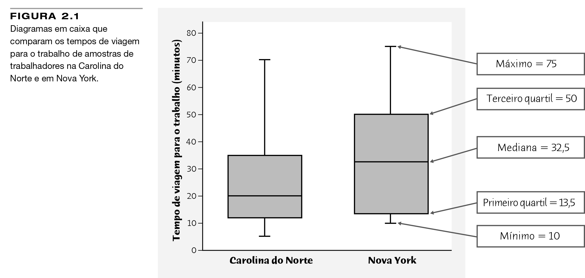

Nos Capítulos 1 e 2, discutimos métodos para resumir um grande conjunto de dados. Esses incluem apresentações gráficas. Gráficos de barras e histogramas e resumos numéricos, como média, mediana, quartis e desvio-padrão. Neste capítulo, veremos outra maneira de resumir um grande conjunto de dados usando uma curva suave para dar a forma geral de sua distribuição.
Dispomos, então, de um conjunto de ferramentas gráficas e numéricas para descrever distribuições [empíricas]. Mais ainda, temos uma estratégia clara para a exploração de dados de uma única variável quantitativa. (MOORE; NOTZ; FLIGNER, 2023 , p. 59).
3.1 AED - Análise Exploratória de Dados (cap. 1)
“O que [nos] dizem os dados?” é a primeira pergunta que fazemos em qualquer estudo estatístico. A análise de dados responde a essa questão por meio de uma exploração ampla dos dados. As ferramentas da análise de dados são gráficos, como os histogramas e os diagramas de dispersão, e medidas numéricas, como as médias e as correlações. No entanto, ao menos tão importantes quanto as ferramentas, são os princípios que organizam nosso pensamento no exame dos dados(MOORE; NOTZ; FLIGNER, 2023 , p. 9).
Essa pergunta torna-se mais precisa se a recolocarmos d oseguinte modo:
Considerando o modo como os dados foram coletados, o que nós estamos autorizados a dizer sobre o que esses mesmo dados“nos dizem”?
Uma vez que dados não dizem.
Eles não falam por si.
Nós é que os interpretamos.
E os limites dessa interpretação importa! E muito!
Sendo que esses limites dependem de como os dados foram coletados!
8.4 Credibilidade da inferência a partir de amostras
O objetivo de uma amostra é dar informação sobre uma população maior. O processo de extração de conclusões sobre a população com base na amostra de dados se chama inferência, porque inferimos informação sobre a população a partir do que sabemos sobre a amostra.
Inferência a partir de amostras de conveniência ou de resposta voluntária seria enganosa, pois esses métodos de escolha de amostra são viesados. Nesses casos, estamos quase absolutamente certos de que a amostra não representa precisamente a população. A primeira razão para nos apoiarmos em amostragem aleatória é a eliminação do viés na seleção de amostras de uma lista de indivíduos disponíveis.
No entanto, é pouco provável que os resultados a partir de uma amostra aleatória sejam exatamente os mesmos para toda a população. Resultados amostrais, como as taxas mensais de desemprego obtidas pela Pesquisa da População Corrente, são apenas estimativas da verdade sobre a população. Se selecionarmos duas amostras aleatórias da mesma população, iremos, quase certamente, selecionar indivíduos diferentes. Assim, os resultados irão diferir de alguma forma, apenas pelo acaso. Amostrasadequadamente planejadas evitam viés sistemático, mas raramente seus resultados são exatamente precisos e variam de amostra para amostra.
Por que podemos confiar em amostras aleatórias? A grande ideia é de que os resultados de amostragem aleatória não mudam de maneira fortuita de amostra para amostra. Como usamos o acaso deliberadamente, os resultados obedecem às leis da probabilidade que governam o comportamento aleatório. Essas leis nos permitem dizer quão provavelmente os resultados amostrais estarão próximos da verdade sobre a população. A segunda razão para o uso de amostragem aleatória é que as leis da probabilidade permitem inferência confiável sobre a população. Resultados de amostras aleatórias vêm com uma margem de erro que delimita o tamanho do erro provável. Como fazer isso é parte da técnica da inferência estatística. Apresentaremos o raciocínio no Capítulo 16 e detalhes em todo o restante do livro.
Um ponto merece nota: amostras aleatórias maiores fornecem resultados mais precisos do que amostras menores. Tomando uma amostra aleatória muito grande, você pode ter certeza de que o resultado amostral está muito próximo da verdade sobre a população. A Pesquisa da População Corrente contata cerca de 60 mil residências, de modo que estima a taxa nacional de desemprego de modo muito preciso. Pesquisas de opinião que contatam 1.000 ou 1.500 pessoas apresentam resultados menos precisos.
É uma ideia errada a de que tamanhos amostrais maiores sempre dão resultados mais precisos. Depois do debate democrático em julho de 2019, uma pesquisa online em Nova Jersey listou Bernie Sanders como vencedor do debate, obtendo 53% dos 13.468 votos na pesquisa. No entanto, uma pesquisa da Quinnipiac University, em 29 de julho, de uma amostra aleatória de 807 democratas eleitores encontrou que apenas 8% escolheram Sanders como vencedor. Outras pesquisas obtiveram resultados semelhantes.
Ao ler resultados de uma pesquisa, não suponha que a pesquisa seja exata porque o tamanho amostral é grande. Você deve prestar mais atenção ao modo como a amostra foi selecionada. Técnicas amostrais viesadas continuam a fornecer resultados viesados, não importando o tamanho da amostra. (MOORE; NOTZ; FLIGNER, 2023 , p. 168-169)
Sob pena de nossas observações, achados, inferências e conclusões (causais e não causais) de pesquisa tornarem-se facilmente contestáveis.
Quanto aos princípios organizadores de um letramento ou pensamento estatístico, dois destacam-se na AED - Análise Exploratória de Dados:
Um dos princípios organizadores da análise de dados consiste em [P1] olhar, primeiro, um item de cada vez e, [P2] depois, as relações entre estes. Nossa apresentação segue esse princípio. Nos Capítulos 1 a 3, você estudará variáveis e suas distribuições. Os Capítulos 4 a 6 referem-se a relações entre variáveis. O Capítulo 7 faz uma revisão dessa parte do texto (MOORE; NOTZ; FLIGNER, 2023 , p. 9).
Estatística, melhor é referir-se à Probabilidade e Estatística, é conceituada como: ramo da Matemática aplicada que reune um conjunto de métodos para:
planejarestudos observacionais e experimentos aleatorizados em qualquer área do conhecimento científico, notadamente para pesquisas empíricas;
coletar dados válidos e fidedignos; ou seja, com alta acurácia.
formular e testarhipóteses [NHST-Null Hypotesis Significant Test] e
interpretar conjuntos de dados e informações; [O que “nos dizem” os dados?]
elaborar conclusões baseadas em evidências [dados e informações válidos e fidedignos] para
apoiar tomadas de decisão e para
gerir ou controlar um conjunto de ações em curso: qualidade, escala, cobertura, custos financeiros, eficiência, eficácia, efetividade etc. por meio de indicadores e de índices cuja aplicabilidade, comparabilidade, consistência e difusão possam ser testadas e validadas por uma comunidade de experts.
O Professor João Luiz Becker (BECKER, 2015) promove uma clara conceituação e distinção entre dados e informações e ilustra o ciclo em que a coleta e a extração deles inserem-se num processo mais amplo de obtenção de conhecimento, que prossegue e passa pela decisão e pela ação.

Outros conceitos importantes são o de validade e de fidedignidade dos dados coletados, que podem ser compreendidos através da ilustração a seguir:
Precisão ou Fidedignidade -x- Validade, Exatidão ou Acurácia
Conferir também a fig. 2.1 - distinção entre confiabilidade e validade, usando a metáfora do tiro ao alvo(Poldrack, 2025 , p. 13), que ainda conceitua validade aparente, de constructo e preditiva. Segundo esse autor:
“A confiabilidade se refere à consistência da localização dos disparos, e a validade se refere à acurácia [em sentido estrito] dos disparos em relação ao alvo”.
Outro conceito importante é o de acurácia, em sentido amplo, que agrega tanto o de confiabilidade (precisão) como o de validade ou veracidade (exatidão).
Validade, precisão e acurácia (sentido amplo). Cf. UFU, p. …
Perceba que, na prática, quando coletamos dados, desconhecemos o alvo, ou seja, o verdadeiro e desconhecido valor do parâmetro populacional de interesse.
Por meio de umaamostra probabilística de tamanho adequado (n), é possível estimar esse valor desconhecido de interesse da pesquisa.
A seguir a ideia de Ciclo da Estatística Básica Inferencial, que, após uma boa Análise Estatística Descritiva (AED) e Exploratória (AEE), busca chegar a conclusões para toda a população amostrada a partir de uma amostra probabilísticaválida e fidedígna daquela coletada.
Ciclo da Inferência ou indução Estatística.
É importante fixar os principais conceitos que serão trabalhados nesta disciplina CDE-a-DPP, o que reclama incursionar em conceitos simples de Estatística Básica, como: população, amostra, plano amostral, tabelas, variáveis (seus tipos), gráficos (seus tipos), resumos numéricos como média, desvio padrão, mediana, Amplitude Interquartil (AIQ), correlação, regressão etc.
A ferramenta statkey é um bom aplicativo free on line para exercitar esses conceitos. Experimente ela com nosso data set já organizado obitjcsv.csv, que se encontra na pasta out de nosso Projeto CDE-a-DPP-2.Rproj; clique aqui: https://www.lock5stat.com/StatKey/index.html para acessar esse aplicativo. No plano de ensino há diversas outras (cf. aula n. 2).
Uma opção free and open é o: JASP, desenvolvido pela Universidade de Amsterdan, sem necessidade de aprender uma linguagem de programação.
As duas 2 fases (a 1ª é a fase da coleta, organização e tratamento dos dados, que demanda 80% do tempo da pesquisa de campo), de AED (Análise Exploratória Descritiva) e de AEI (Análise Exploratória Inferencial), demandarão os 20% restante do tempo de uma pesquisa e costumam ser-nos bem mais prazerosas.
Nessa nova fase, bem mais atraente, o objetivo é explorar os dados em busca do reconhecimento de padrões perceptíveis (cuidado com a possibilidade do erro percepcional).
Gerar vários gráficos (barras, colunas, pizza, diagrama de ramo e folha, histogramas, boxplot, dispersão etc.) que permitam essa visualização e captura de padrões para cada tipo variável observada: categórica (nominal ou ordinal) ou quantitativa (discreta ou contínua).
Bem como resumos numéricos dos conjuntos de dados coletados, que podem ser grandes.
A figura a seguir ilustra essa classificação dos tipos de variáveis (Escovedo, 2024 , p. 17).
Tipos de Variáveis
Resumos dos dados são muito úteis: média e desvio padrão; mediana e AIQ (Amplitude Interquartil); resumo dos 5 números, coeficiente de variação, assimetria, curtose etc.
Bem como para investigar possibilidade de associação entre elas: a depender da combinação dos seus tipos, por meio de testes estatísticos formais.
Gerar tabelas de dupla entrada ou de contigência, quando ambas forem categóricas, do tipo factor <fctr>.
3.2 Um rápido exemplo
Procurar fazer uso dos pacotes do R acima mencionados.
3.2.1 Preparar
Limpar e setup do ambiente a ser utilizado: limpar e preparar a Environment.
Código
```{r setup, include=TRUE}# Deletar os objetos da Global Environmentrm(list=ls())# Padrão de saídas Rmarkdownknitr::opts_chunk$set(echo =TRUE, warning =FALSE)# Instalar tidyverse caso não esteja já instaladoif (!require('tidyverse')) install.packages('tidyverse')# Instalar pacote magrittr caso não esteja já instaladoif (!require("magrittr")) install.packages("magrittr")# Instalar pacote mlr caso não esteja já instaladoif (!require("mlr")) install.packages("mlr")# Carregar o pacote DBI na Global Environment: disponível para uso diretolibrary('tidyverse')# Warning: package ‘tidyverse’ was built under R version 4.2.3# Warning: package ‘ggplot2’ was built under R version 4.2.3# Warning: package ‘tibble’ was built under R version 4.2.3# Warning: package ‘tidyr’ was built under R version 4.2.3# Warning: package ‘readr’ was built under R version 4.2.3# Warning: package ‘purrr’ was built under R version 4.2.3# Warning: package ‘dplyr’ was built under R version 4.2.3# Warning: package ‘stringr’ was built under R version 4.2.3# Warning: package ‘forcats’ was built under R version 4.2.3# Warning: package ‘lubridate’ was built under R version 4.2.3# ── Attaching core tidyverse packages # ──────────────────────────────────────────── tidyverse 2.0.0 ──# ✔ dplyr 1.1.2 ✔ readr 2.1.5# ✔ forcats 1.0.0 ✔ stringr 1.5.1# ✔ ggplot2 3.5.1 ✔ tibble 3.2.1# ✔ lubridate 1.9.3 ✔ tidyr 1.3.1# ✔ purrr 1.0.2 # ── Conflicts ────────────────────────────────────────────────────────────── # tidyverse_conflicts() ──# ✖ dplyr::filter() masks stats::filter()# ✖ dplyr::lag() masks stats::lag()# ℹ Use the conflicted package to force all conflicts to become errors# Carregar o pacote magrittr na Global Environment: disponível para uso diretolibrary("magrittr")# Attaching package: ‘magrittr’# # The following object is masked from ‘package:purrr’:# # set_names# # The following object is masked from ‘package:tidyr’:# # extract# Carregar o pacote mlr na Global Environment: disponível para uso diretolibrary("mlr")# Carregar o pacote rmarkdown na Global Environment: disponível para uso direto# library("rmarkdown")```
```{r}# Importar como tibble o arquivo de dentro da pasta chamada out.obitj_csv <- readr::read_csv(file ="out/obitjcsv.csv",# delim = ",",quote ="\"",locale =locale(decimal_mark =".",encoding ="UTF-8" ) )# cat - Concatenate And Printcat("\n") # imprime no console (saída) uma linha em brancocat("Estrutura do objeto R denominado obitj_csv:\n")str(obitj_csv)cat("\n")cat("Nomes das 24 colunas do objeto obitj_csv:\n")names(obitj_csv)obitj_csv # tibble:447 × 24```
Estrutura do objeto R denominado obitj_csv:
spc_tbl_ [447 × 24] (S3: spec_tbl_df/tbl_df/tbl/data.frame)
$ nomean : chr [1:447] "A.J.D.S.A." "A.G.M.B." "A.G.D.S." "A.J.D.S.S." ...
$ maean : chr [1:447] "L.M.D.S.A." "A.D.S.M.B.B." "F.A.G." "S.D.S.S." ...
$ nasc : Date[1:447], format: "2001-04-21" "2000-09-04" ...
$ sexo : chr [1:447] "m" "m" "m" "m" ...
$ cor : chr [1:447] "branco" "pardo" NA "pardo" ...
$ corag : chr [1:447] "branco" "negro" NA "negro" ...
$ dom : chr [1:447] "Bairro São Francisco" NA NA "Vila Finsocial" ...
$ dataesc1 : Date[1:447], format: "2018-09-28" NA ...
$ esc1 : chr [1:447] "6 ano" NA NA "1 série EM" ...
$ esc2 : chr [1:447] NA "8 ano" "9 ano" "1 série EM" ...
$ compfam : chr [1:447] "parentes" NA NA "mãe" ...
$ relpai : chr [1:447] "ausente" NA NA "auxílio" ...
$ usudrog : chr [1:447] "s" NA NA "s" ...
$ subst : chr [1:447] "maconha" NA NA "cocaína / crack" ...
$ orgcrim : chr [1:447] "n" NA NA NA ...
$ sitdiv : chr [1:447] NA NA NA "TDAH" ...
$ dataobt : Date[1:447], format: "2021-10-13" "2018-08-19" ...
$ morte : chr [1:447] "nat" "viol" "viol" "viol" ...
$ paf : chr [1:447] "n" "s" "n" "n" ...
$ circobt : chr [1:447] "Outros" "conflitos entre criminalidade" "conflitos entre criminalidade" "Outros" ...
$ obsobt : chr [1:447] NA NA NA NA ...
$ idadeobtd: num [1:447] 7480 6558 7384 6614 8353 ...
$ idadeobta: num [1:447] 20.5 18 20.2 18.1 22.9 ...
$ npassag : num [1:447] 5 4 10 2 8 2 2 2 5 2 ...
- attr(*, "spec")=
.. cols(
.. nomean = col_character(),
.. maean = col_character(),
.. nasc = col_date(format = ""),
.. sexo = col_character(),
.. cor = col_character(),
.. corag = col_character(),
.. dom = col_character(),
.. dataesc1 = col_date(format = ""),
.. esc1 = col_character(),
.. esc2 = col_character(),
.. compfam = col_character(),
.. relpai = col_character(),
.. usudrog = col_character(),
.. subst = col_character(),
.. orgcrim = col_character(),
.. sitdiv = col_character(),
.. dataobt = col_date(format = ""),
.. morte = col_character(),
.. paf = col_character(),
.. circobt = col_character(),
.. obsobt = col_character(),
.. idadeobtd = col_double(),
.. idadeobta = col_double(),
.. npassag = col_double()
.. )
- attr(*, "problems")=<externalptr>
Nomes das 24 colunas do objeto obitj_csv:
[1] "nomean" "maean" "nasc" "sexo" "cor" "corag"
[7] "dom" "dataesc1" "esc1" "esc2" "compfam" "relpai"
[13] "usudrog" "subst" "orgcrim" "sitdiv" "dataobt" "morte"
[19] "paf" "circobt" "obsobt" "idadeobtd" "idadeobta" "npassag"
# A tibble: 447 × 24
nomean maean nasc sexo cor corag dom dataesc1 esc1 esc2
<chr> <chr> <date> <chr> <chr> <chr> <chr> <date> <chr> <chr>
1 A.J.D.S.A. L.M.D.S… 2001-04-21 m bran… bran… Bair… 2018-09-28 6 ano <NA>
2 A.G.M.B. A.D.S.M… 2000-09-04 m pardo negro <NA> NA <NA> 8 ano
3 A.G.D.S. F.A.G. 1997-06-22 m <NA> <NA> <NA> NA <NA> 9 ano
4 A.J.D.S.S. S.D.S.S. 2002-05-01 m pardo negro Vila… 2020-02-09 1 sé… 1 sé…
5 A.A.D.A. A.A.D.A. 1999-10-13 m <NA> <NA> <NA> NA <NA> 8 ano
6 A.E.M. M.E.M. 2001-03-25 m bran… bran… <NA> 2018-10-23 8 ano 8 ano
7 A.C.A. J.A.D.A. 2000-12-18 m pardo negro Seto… 2018-11-18 8 ano 8 ano
8 A.O. D.G.B.S. 2003-09-30 m bran… bran… Bair… 2019-10-01 8 ano 8 ano
9 A.R.C. M.D.R.D… 2001-02-24 m pardo negro <NA> NA <NA> <NA>
10 A.O.S. K.R.S. 2003-02-06 m pardo negro Parq… 2018-07-17 9 ano 8 ano
# ℹ 437 more rows
# ℹ 14 more variables: compfam <chr>, relpai <chr>, usudrog <chr>, subst <chr>,
# orgcrim <chr>, sitdiv <chr>, dataobt <date>, morte <chr>, paf <chr>,
# circobt <chr>, obsobt <chr>, idadeobtd <dbl>, idadeobta <dbl>,
# npassag <dbl>
3.2.3 Transformar
2. Transformar esse data set para que criar as seguintes variáveis categóricas:
Transformar, antes, as variáveis tipo char que enquadram-se como factor: fctr.
Código
```{r}# para explicitar a ordem das categorias nas variáveis# que medem níveis de escolaridades: esc1 e esc2# variável categórica ordinal com 12 levelsseries <-c("1 ano","2 ano","4 ano","5 ano","6 ano","7 ano","8 ano","9 ano","1 série EM","2 série EM","3 série EM" )# para explicitar a ordem das categorias nas variáveis# que medem apenas 2 níveis (levels): s - sim / n - não# nessas ordem (e não na ordem alfabética)sim_n <-c("s","n" )# Declaração de Variáveis tipo char já existentes como categóricasobitj_csv <- obitj_csv %>%mutate(sexo =# nova variável tipo <fctr> sexo %>%# a partir da variável original sexofactor() %>%# converte para o tipo factor forcats::fct_recode( # forcats função para recodificar labels"F"="f", # novo à esquerda, antigo à direita"M"="m"), # F = Feminino, M = Masculino# mesma coisa com código mais condensado:cor =factor(cor), # mantidos os levels originais: branco, pardo, preto# variável corag = cor agragada em apenas 2 categoriascorag =factor(corag), # mantidos os levels originais: branco, negro# variável esc1 = escolaridade 1, com 11 categoriasesc1 =# nova variável tipo <fctr> esc1 |># a partir da variável original esc2factor( series ) |># converte para o tipo factor: 11/12 categorias forcats::fct_recode( # forcats função para recodificar labels"1ano"="1 ano", # novo à esquerda, antigo à direita"2ano"="2 ano","3ano"="3 ano", # embora esta categoria ñ ocorra"4ano"="4 ano","5ano"="5 ano","6ano"="6 ano","7ano"="7 ano","8ano"="8 ano","9ano"="9 ano","1serieEM"="1 série EM","2serieEM"="2 série EM","3serieEM"="3 série EM" ), # mantido nenhum label original# variável esc2 = escolaridade 2, com 10 categoriasesc2 =# nova variável tipo <fctr> esc2 |># a partir da variável original esc2factor( series ) |># converte para o tipo factor: 12 categorias forcats::fct_recode( # forcats função para recodificar labels"1ano"="1 ano", # embora esta categoria ñ ocorra"2ano"="2 ano", # novo à esquerda, antigo à direita"3ano"="3 ano", # categoria que ñ ocorre"4ano"="4 ano","5ano"="5 ano","6ano"="6 ano","7ano"="7 ano","8ano"="8 ano","9ano"="9 ano","1serieEM"="1 série EM","2serieEM"="2 série EM","3serieEM"="3 série EM" ), # mantido nenhum label original# variável compfam = composição familiar, com 6 categoriascompfam =# nova variável tipo <fctr> compfam |># a partir da variável original compfamfactor() |># converte para o tipo factor: 6 categorias forcats::fct_recode( # forcats função para recodificar labels"mae"="mãe", # novo à esquerda, antigo à direita"mae_padr"="mãe + padrasto","pai_mae"="pai + mãe","pai_madr"="pai + madrasta", ), # mantidos só 2 labels originais: pai, parentes# variável relpai = relação com pai, com 3 categoriasrelpai =# nova variável tipo <fctr> relpai |># a partir da variável original relpaifactor() |># converte para o tipo factor: 3 categorias forcats::fct_recode( # forcats função para recodificar labels"auxilio"="auxílio", # novo à esquerda, antigo à direita"mesma_resid"="mesma residência","ausente"="ausente" ), # mantidos só um label original: ausente# variável usudrog = usuário de droga, com 2 categorias: s / nusudrog =# nova variável tipo <fctr> usudrog |># a partir da variável original usudrogfactor( sim_n ), # converte para o tipo factor: 2 categorias# variável subst = Substância entorpecente, com 4 categoriassubst =# nova variável tipo <fctr> subst %>%# a partir da variável original substfactor() %>%# converte para o tipo factor: 4 categorias forcats::fct_recode( # forcats função para recodificar labels"coca_crack"="cocaína / crack", # novo à esquerda, antigo à direita"lsd_ecstasy"="lsd, ecstasy","licita"="lícitas" ), # mantidos só um level original: maconha# variável orgcrim = organização criminosa, com 2 categorias: s / norgcrim =# nova variável tipo <fctr> orgcrim |># a partir da variável original orgcrimfactor( sim_n ), # converte para o tipo factor: 2 categorias# variável morte = tipo de morte, com 2 categorias: nat / violmorte =factor(morte), # mantida ordem dos 2 levels originais# variável paf = morte por perfuração de arma de fogo, com 2 cat: s / npaf =# nova variável tipo <fctr> paf |># a partir da variável original paffactor( sim_n ), # converte para o tipo factor: 2 categorias# variável circobt = circunstância do óbito, com 5 categoriascircobt =# nova variável tipo <fctr> circobt %>%# a partir da variável original circobtfactor() %>%# converte para o tipo factor: 5 categorias forcats::fct_recode( # forcats função para recodificar labels"MDIP"="intervenção policial", # novo à esquerda, antigo à direita# MDIP = Morte Decorrente Intervenção Policial"MDCC"="conflitos entre criminalidade",# MDIP = Morte Decorrente Conflitos entre Criminalidade"transito"="trânsito", "outros"="Outros","conf_fam_afet"="conflito familiar / afetivo" ) )obitj_csv |>head(25)```
# A tibble: 25 × 24
nomean maean nasc sexo cor corag dom dataesc1 esc1 esc2
<chr> <chr> <date> <fct> <fct> <fct> <chr> <date> <fct> <fct>
1 A.J.D.S.A. L.M.D.S… 2001-04-21 M bran… bran… Bair… 2018-09-28 6ano <NA>
2 A.G.M.B. A.D.S.M… 2000-09-04 M pardo negro <NA> NA <NA> 8ano
3 A.G.D.S. F.A.G. 1997-06-22 M <NA> <NA> <NA> NA <NA> 9ano
4 A.J.D.S.S. S.D.S.S. 2002-05-01 M pardo negro Vila… 2020-02-09 1ser… 1ser…
5 A.A.D.A. A.A.D.A. 1999-10-13 M <NA> <NA> <NA> NA <NA> 8ano
6 A.E.M. M.E.M. 2001-03-25 M bran… bran… <NA> 2018-10-23 8ano 8ano
7 A.C.A. J.A.D.A. 2000-12-18 M pardo negro Seto… 2018-11-18 8ano 8ano
8 A.O. D.G.B.S. 2003-09-30 M bran… bran… Bair… 2019-10-01 8ano 8ano
9 A.R.C. M.D.R.D… 2001-02-24 M pardo negro <NA> NA <NA> <NA>
10 A.O.S. K.R.S. 2003-02-06 M pardo negro Parq… 2018-07-17 9ano 8ano
# ℹ 15 more rows
# ℹ 14 more variables: compfam <fct>, relpai <fct>, usudrog <fct>, subst <fct>,
# orgcrim <fct>, sitdiv <chr>, dataobt <date>, morte <fct>, paf <fct>,
# circobt <fct>, obsobt <chr>, idadeobtd <dbl>, idadeobta <dbl>,
# npassag <dbl>
3.2.4 Inspecionar
Uma rápida inspeção em esc1 e esc2.
Por meio de uma contagem das categorias presentes em esc1, que corresponde à escolaridade do adolescente na data da primeira passagem pela DePAI, resumidas em uma tabela.
Constata-se que a categoria 3ano não ocorreu nos dados coletados para esc1.
A mesma tabela em um formato mais adequado para impressão em .pdf.
Código
```{r}library(gt)tab.esc1 <- obitj_csv |>count(esc1) |>mutate(p = n /sum(n) *100) |>mutate(p =round(p, 1) )actual_colnames <-colnames(tab.esc1) # [-1]# actual_colnames## [1] "esc1" "n" "p"spanners_and_header <-function(gt_tbl) { gt_tbl |>cols_label(esc1 ="Escolaridade na data 1ª passagem",n ="Frequência Absoluta",p ="Em relação ao total" ) |>tab_spanner(label =md("**2016-2023**"),columns =1 ) |>tab_spanner(label =md("**Contagem por séries**"),columns =c(2) ) |>tab_spanner(label =md("**Proporção percentual (%)**"),columns =c(3) ) |>tab_header(title ="Goiânia (DePAI): Escolaridade de jovens em conflito com a lei",subtitle ="Na data da 1ª passagem pela Delegacia de Apuração de Atos Infracionais" ) }tab.esc1 |>gt() |># cols_label(.list = desired_colnames) |> spanners_and_header()```
Goiânia (DePAI): Escolaridade de jovens em conflito com a lei
Na data da 1ª passagem pela Delegacia de Apuração de Atos Infracionais
2016-2023
Contagem por séries
Proporção percentual (%)
Escolaridade na data 1ª passagem
Frequência Absoluta
Em relação ao total
1ano
1
0.2
2ano
1
0.2
4ano
6
1.3
5ano
9
2.0
6ano
43
9.6
7ano
55
12.3
8ano
80
17.9
9ano
92
20.6
1serieEM
81
18.1
2serieEM
26
5.8
3serieEM
7
1.6
NA
46
10.3
Agora a mesma tabela acima é reproduzida para a variável categóricaesc2, que faz a contagem dos jovens em conflito com a lei (com passagem na DePAI), na data do seu respectivo óbito.
Código
```{r}tab.esc2 <- obitj_csv |>count(esc2) |>mutate(p = n /sum(n) *100) |>mutate(p =round(p, 1) )actual_colnames <-colnames(tab.esc2) # [-1]# sum(tab.esc2$p) # 100.00%spanners_and_header <-function(gt_tbl) { gt_tbl |>cols_label(esc2 ="Escolaridade na data do óbito",n ="Frequência Absoluta",p ="Em relação ao total" ) |>tab_spanner(label =md("**2016-2023**"),columns =1 ) |>tab_spanner(label =md("**Contagem por séries**"),columns =c(2) ) |>tab_spanner(label =md("**Proporção percentual (%)**"),columns =c(3) ) |>tab_header(title ="Goiânia (DePAI): Escolaridade de jovens em conflito com a lei",subtitle ="Com passagem pela DePAI - Delegacia de Apuração de Atos Infracionais, na data do respectivo óbito" ) }tab.esc2 |>gt() |># cols_label(.list = desired_colnames) |> spanners_and_header()```
Goiânia (DePAI): Escolaridade de jovens em conflito com a lei
Com passagem pela DePAI - Delegacia de Apuração de Atos Infracionais, na data do respectivo óbito
2016-2023
Contagem por séries
Proporção percentual (%)
Escolaridade na data do óbito
Frequência Absoluta
Em relação ao total
2ano
2
0.4
4ano
7
1.6
5ano
9
2.0
6ano
33
7.4
7ano
53
11.9
8ano
81
18.1
9ano
62
13.9
1serieEM
103
23.0
2serieEM
36
8.1
3serieEM
21
4.7
NA
40
8.9
Agora por meio de um gráfico de Colunas da variável categórica: esc2, que corresponde à escolaridade do adolescente na data do seu óbito.
Código
```{r}# uma primeira inspeção rápidaobitj_csv |>ggplot( aes( esc2 ) ) +geom_bar() # orientation = "x"```
Inverter os eixos x e y cima e também a ordem da variável categórica esc2 plotada no eixo y.
Para obter um gráfico de Barras.
Código
```{r}obitj_csv |>ggplot( aes( y = forcats::fct_rev(esc2) ) ) +# fct_rev() reverte a ordem das categoriasgeom_bar() # orientação barras horizontais```
Que, neste caso, é mais legível que o gráfico de colunas.
Constata-se que as categorias 1ano e 3ano não ocorreram nos dados coletados para esc2.
3.2.5 Curva Normal
Inspecionar a variável numérica contínuaidade na data do óbito, expressa em anos (com uma casa decimal), dos jovens em conflito com a lei: idadeobta.
Código
```{r}names(obitj_csv) # nomes de todas as variáveis do data setobitj_csv # exibe o data set (conjunto de dados)levels(obitj_csv$circobt) # nomes das categorias em ordem alfabética```
Primeiro um histograma da variável idade na data do óbito em anos.
Código
```{r}obitj = obitj_csvmedia <-mean(obitj$idadeobta, na.rm =TRUE) |>round(1)ggplot(data =NULL,aes(x = obitj$idadeobta)) +geom_histogram(binwidth =1, fill ="white", color ="gray80") +scale_x_continuous(breaks =seq(-5, 35, 5)) +stat_bin(binwidth =1,geom ="text",aes(label = ..count..),vjust =-0.3,size =3.5) +stat_bin(binwidth =1, geom ="text", color ="black", cex =2.2,aes(y =after_stat(count /sum(count)), label = scales::percent(round(after_stat(count /sum(count)), 3))) ,position =position_stack(vjust =350.0) ) +geom_vline(xintercept =mean(obitj$idadeobta, na.rm =TRUE),color ="red", size =0.4 , linetype ="dotdash", alpha =0.5) +labs(title ="Histograma da idade na data do óbito (N = 449 obs.)",subtitle ="Jovens c/passagem na DEPAI - Goiânia (2016-2023)",y ="Frequencia Absoluta (n) e Relativa (%)",x =paste0("Idade na data do óbito (média em vermelho = ", media, " anos)"),caption ="Fonte: dados primários levantados por Queops (2024).")```

Um boxplot para análise esploratória descritiva da mesma variável numérica.
Código
```{r}obitj |>ggplot( aes(x = idadeobta) ) +geom_boxplot() +scale_x_continuous(breaks =seq(-5, 35, 5)) +geom_vline(xintercept =mean(obitj$idadeobta, na.rm =TRUE),color ="red", size =0.7 , linetype ="dotdash") +labs(title ="Boxplot da idade na data do óbito (N = 449 obs.) \nJovens c/passagem na DEPAI - Goiânia (2016-2023)",y ="",x =paste0("Idade na data do óbito (média em vermelho = ", media, " anos)") )```

Gráfico de barras lado a lado ou de barras empilhadas para verificar uma possível relação entre as variáveis categóricas: morte (nat/viol) e usudrog (s/n).
Código
```{r}#| label: fig-plot-barras-lado-a-lado-morte-usudrog#| warning: false#| fig-cap: "Gráfico de Barras Lado a Lado: Tipo de morte dos jovens que vieram a óbito (natural/violenta) segundo uso de drogas (sim/não)\ncom passagem na DEPAI de Goiânia\nPeríodo: 2016 a 2023 (N = 447)."obitj |>select(morte, usudrog) |>filter(!is.na(morte)) |>filter(!is.na(usudrog)) |>group_by(morte, usudrog) |> dplyr::summarize(n = dplyr::n()) |>ggplot(aes(x = morte, y = n,fill = usudrog, group = usudrog)) +scale_y_continuous(limits =c(0, 300), breaks =seq(0, 300, 50)) +geom_bar(stat ="identity", binwidth =1,position ="dodge",color ="black", na.rm =TRUE) +scale_fill_grey(start =0.0, end =0.7) +geom_text(aes(label = n), position =position_dodge(width =0.9), vjust =-0.25) +geom_text(aes(y = n -0.5,label = scales::percent(round(n/sum(n), 3))),color ="white",position =position_dodge(width =0.9), vjust =+1.0,size =3) +labs(title ="Gráfico de Barras Lado a Lado: tipo de morte",subtitle ="Quantidade por tipo de morte natual ou violenta (N = 399)\nsegundo usuário de droga (n = não / s = sim).",y ="Frequencia Abs./Relativa",x ="Tipo de morte (natural/violenta)",caption ="Fonte: 1. dados primários coletados por Queops (2024).")```

Depois uma curva suave (densidade) nas 5 (cinco) categorias da variável tipo factor cognominada circobt, a saber:
MDCC
MDIP
transito
conf_fam_afet
outros
Gráfiico com curvas suaves de densidade para os dados coletados de idade na data do óbito para as 5 categorias observadas.
Código
```{r}# Suponha que você tenha um data frame chamado 'dados' com colunas para 'categoria' e para 'valor'dados <- obitj_csv# Remove as linhas onde a coluna 'circobt' apresenta NAdados_sem_na <- dados[!is.na(dados$circobt), ]# Carrega o pacote ggplot2 para gráficos avançadoslibrary(ggplot2)# Gera o gráfico de curvas de densidade para cada categoriaggplot(dados_sem_na, aes(x = idadeobta,color = circobt,fill = circobt)) +geom_density(alpha =0.4) +# Plota as curvas de densidade com transparêncialabs(title ="Curvas de Densidade da idade em anos na data óbito por Categorias",x ="Idade em anos na data óbito",y ="Densidade") +theme_minimal() +# Usa um tema limposcale_fill_manual(values =c("skyblue", "orange", "lightgreen", "pink", "yellow")) +# Cores das áreasscale_color_manual(values =c("blue", "red", "green", "purple", "brown")) # Define cores das linhas```
Agora remover do data set as linhas com idades menor que 5 anos.
Porque tratam-se claramente de dados com erros de digitação.
Código
```{r}# Suponha que você tenha um data frame chamado 'dados' com colunas para 'categoria' e para 'valor'dados <- obitj_csv# Remove as linhas onde a coluna 'circobt' apresenta NAdados_sem_na <- dados[!is.na(dados$circobt), ]# Remove, em seguida, as linhas onde a coluna 'idadeobta' apresenta valores menor ou igual a 5 anosdados_sem_na <- dados_sem_na[dados_sem_na$idadeobta >5, ]# Carrega o pacote ggplot2 para gráficos avançadoslibrary(ggplot2)# Gera o gráfico de curvas de densidade para cada categoriaggplot(dados_sem_na, aes(x = idadeobta,color = circobt,fill = circobt)) +geom_density(alpha =0.4) +# Plota as curvas de densidade com transparêncialabs(title ="Curvas de Densidade da idade em anos na data óbito por Categorias",x ="Idade em anos na data óbito",y ="Densidade") +theme_minimal() +# Usa um tema limposcale_fill_manual(values =c("skyblue", "orange", "lightgreen", "pink", "yellow")) +# Cores das áreasscale_color_manual(values =c("blue", "red", "green", "purple", "brown")) # Define cores das linhas```

Mesmo gráfico acima, só que com cada curva de densidade em uma linha horizontal diferente, numa mesma escala no eixo x.
Código
```{r}library(ggridges) # Permite criar gráficos de densidade empilhados (ridges)obitj |>filter(idadeobta >2) |>filter( !is.na(circobt) ) |>ggplot(aes(x = idadeobta,y = circobt, fill = circobt, color = circobt)) +geom_density_ridges(alpha =0.5, show.legend =FALSE) +# Plota as curvas de densidade com transparênciascale_x_continuous(breaks =12:29) +labs(title ="Densidade de probabilidade: Idade na data do óbito agrupada pela\ncircunstância do óbito dos jovens c/passagem na DEPAI de Goiânia",subtitle ="Período: 2016 a 2023 (N = 391)",x ="Idade (anos)",y ="circobtj",caption ="Fonte: Dados primários coletados por Queops (2024)\nMDIP - Morte Decorrente Intervenção Policial\nMDCC - Morte Decorrente Conflitos entre Criminalidade" )# MDIP = Morte Decorrente Intervenção Policial# MDCC = Morte Decorrente Conflitos entre Criminalidade```
Observa-se um perfil da distribuição da variável empírica idadeobta que assemelha-se muito a uma curva Normal, na 2 categorias:
MDIP = Morte Decorrente Intervenção Policial
MDCC = Morte Decorrente Conflitos entre Criminalidade
Ou seja, esses dois fenômenos apresentam um comportamento aleatório.
Acrescentar o mesmo tipo gráfico de densidade acima agora para a variável categórica esc2.
Ou seja, segundo a categórica da série até então cursada pelo jojvem em conflito com a lei na data do seu óbito.
Código
```{r}obitj |>filter(idadeobta >2) |>filter( !is.na(esc2) ) |>ggplot(aes(x = idadeobta,y = esc2, fill = esc2, color = esc2)) +geom_density_ridges(alpha =0.5, show.legend =FALSE) +scale_x_continuous(breaks =13:28) +labs(title ="Densidade de probabilidade: Idade na data do óbito (média=18.7 anos) \nEscolaridade no óbito (var. esc2) dos jovens c/passagem na DEPAI de Goiânia",subtitle ="Período: 2016 a 2023 (N = 379)",x ="Idade (anos)",y ="esc2 (na data óbito)",caption ="Fonte: 1. dados primários coletados por Queops (2024)." )```
O perfil de uma distribuição Normal novamente apareceu para as séries so 6º ano até a 3ª série do Ensino Médio.
Ou seja, um comportamento aleatório para esse fenômeno observado nessas séries.
Por fim um gráfico de densidades para a mesma variável idade em anos na data do óbito estratificada ano a ano, para análise da evolução do fenômeno ao longo do passar do tempo em Goiânia: 2016 a 2023 (8 anos).
Código
```{r}obitj <- obitj |>mutate(anobit =year(dataobt) )obitj |>filter(idadeobta >2) |>filter( !is.na(idadeobta) ) |>filter( !is.na(anobit) ) |>mutate(anobit =as.factor(anobit) ) |>ggplot(aes(x = idadeobta,y = anobit, fill = anobit, color = anobit)) +geom_density_ridges(aes(y = anobit),alpha =0.5, show.legend =FALSE) +scale_x_continuous(breaks =12:29) +labs(title ="Densidade de probabilidade: Idade na data do óbito agrupada pelo\nano do óbito dos jovens c/passagem na DEPAI de Goiânia",subtitle ="Período: 2016 a 2023 (N = 396)",x ="Idade (anos)",y ="ano",caption ="Fonte: Dados primários coletados por Queops (2024)" )# MDIP = Morte Decorrente Intervenção Policial# MDCC = Morte Decorrente Conflitos entre Criminalidade```

A proximidade a uma distribuição Normal apareceu nos anos de 2016, 2017 e 2018.
Nos anos subsequentes, 2019 até 2023, as distribuiões ficaram bem mais dispersas e as três últimas (2021, 2022 e 2023) mostraram-se bimodais, afastando-se de um perfil Normal.
3.3 Exercício n. 8.4 - Amostragem no Campus
Você gostaria de iniciar um clube no campus para os que fazem psicologia, e você está interessado na proporção dos que fazem psicologia que adeririam. A taxa seria de US$35 e usada para pagar palestrantes convidados.
Você pergunta a cinco estudantes que fazem psicologia e que fazem seu seminário de psicologia se eles estariam interessados em aderir ao clube e quatro, dos cinco, respondem que sim. Esse método de amostragem é viesado? Se for, qual é a direção provável do viés?
Código
```{r}# Variável binária: 0 = não e 1 = sim# amostra de tamanho n = 5am =c(1, 1, 1, 1, 0)# calcular tamanho da amostra# sum(am)cat("tamanho da amostra", "\n")cat("n = ", sum(am))cat("\n")# mean(am) %>% round(4) * 100cat("proporção dos que fazem psicologia que adeririam:", "\n")cat(mean(am) %>%round(4) *100, "%")```
tamanho da amostra
n = 4
proporção dos que fazem psicologia que adeririam:
80 %
O método é viesado porque se trata de uma amostra de conveniência.
É esperada uma direção de superepresentação dessa amostra.
Logo, 80% apresenta um viés de superestimativa da proporção dos que fazem psicologia que adeririam ao Clube proposto.
3.4 Exercício n. 8.12 - Desonestidade acadêmica
Como estrair uma AAE-c/TPPP no R.
Código
```{r}# Suponha que temos um data frame chamado 'dados' com uma coluna 'estrato' indicando o estrato de cada observação# Exemplo de criação do data frameset.seed(123) # Para reprodutibilidadedados <-data.frame(id =1:3954,estrato =c(rep(1, 1127),rep(2, 989),rep(3, 943),rep(4, 895) ))# Defina o tamanho total da amostra desejadan_total <-40# Calcule o tamanho de cada estratotamanho_estrato <-table(dados$estrato)# Visualize o tamanho de cada estratocat("Cálculo do Tamanho de cada estrato na População Amostrada", "\n")print(tamanho_estrato)# Calcule o tamanho da amostra para cada estrato (proporcional ao tamanho do estrato)n_estrato <- ( n_total * tamanho_estrato /sum(tamanho_estrato) )# Utilizando a função ceiling() para arredondar para o inteiro superiorn_estrato_arredondados <-ceiling(n_estrato)n_estraton_estrato_arredondados# Realize a amostragem estratificadaamostra <-do.call(rbind, lapply(1:4, function(e) { subset_estrato <-subset(dados, estrato == e) subset_estrato[sample(nrow(subset_estrato), n_estrato_arredondados[e]), ]}))# Visualize a amostraprint(amostra)# Visualize o tamanho de cada estrato na amostra: AAE c/TPPcat("\n") # pular uma linha na saídacat("Tamanho de cada estrato na Amostra piloto (n_inic = 40): 1 AAE c/TPP", "\n")print(table(amostra$estrato))```
1. Importar o data set, o arquivo ex01-42hearing.csv, que se encontra na pasta dat > csv de nosso Projeto CDE-a-DPP.Rproj. Recomenda-se baixar a atualizar a última versão desse nosso projeto que se encontra compartilhado no google drive: https://drive.google.com/drive/u/1/folders/1wm9jUo5XlBHqbQDRf9XevFbXcqkWogqt
Código
```{r}# Importar como tibble o arquivo de dentro da pasta chamada out.audicao <- readr::read_csv(file ="dat/csv/ex01-42hearing.csv",# delim = ",",quote ="\"",locale =locale(decimal_mark =".",encoding ="UTF-8" ) )# cat - Concatenate And Printcat("\n") # imprime no console (saída) uma linha em brancocat("\n")cat("Estrutura do objeto R denominado audicao:\n")str(audicao)cat("\n")cat("Nomes da única coluna do objeto audicao:\n")names(audicao)audicao # tibble:24 × 1```
Estrutura do objeto R denominado audicao:
spc_tbl_ [24 × 1] (S3: spec_tbl_df/tbl_df/tbl/data.frame)
$ numcorrect: num [1:24] 65 61 67 59 58 62 56 67 61 67 ...
- attr(*, "spec")=
.. cols(
.. numcorrect = col_double()
.. )
- attr(*, "problems")=<externalptr>
Nomes da única coluna do objeto audicao:
[1] "numcorrect"
# A tibble: 24 × 1
numcorrect
<dbl>
1 65
2 61
3 67
4 59
5 58
6 62
7 56
8 67
9 61
10 67
# ℹ 14 more rows
3.5.1 letra a
2. Gerar dois diagramas de ramo e folha, como pedido na letra do exercício 1.42 (p. 36).
```{r}# R program to illustrate# Stem and Leaf Plot# using stem()stem(audicao$numcorrect, scale =0.5) # nessa escala os ramos não se dividem```
The decimal point is 1 digit(s) to the right of the |
4 | 9
5 | 36668889
6 | 1123556777889
7 | 00
Outro diagrama de árvore, agora com divisão dos ramos.
Código
```{r}# using stem()stem(audicao$numcorrect, scale =1) # nessa escala os ramos dividem-se em dois```
The decimal point is 1 digit(s) to the right of the |
4 | 9
5 | 3
5 | 6668889
6 | 1123
6 | 556777889
7 | 00
O segundo diagrama de ramos e folhas é mais informativo que o primeiro.
Porque mostra uma distribuição bimodal.
Todavia o primeiro resume melhor os dados, com forma de sino levemente assimétrica à esquerda. E com moda igual à mediana.
3.6 Exercício n. 2.31 - Tempos de sobrevivência de cobaias
Eis os tempos de sobrevivência, em dias, de 72 cobaias depois de serem infectadas, por injeção, com uma bactéria infecciosa, em um experimento médico.17 Os tempos de sobrevivência, sejam de máquinas sob estresse ou pacientes de câncer após o tratamento, em geral têm distribuições que são assimétricas à direita.
```{r}# Importar como tibble o arquivo de dentro da pasta chamada sobr.cobaias <- readr::read_csv(file ="dat/sobr/ex02-31guinpigs.csv",# delim = NULL, # delimitador é new linequote ="\"",locale =locale(decimal_mark =".",encoding ="UTF-8" ) )# cat - Concatenate And Printcat("\n") # imprime no console (saída) uma linha em brancocat("\n")# imprime no console (saída) uma stringcat("Estrutura do objeto R denominado cobaias:\n")str(cobaias)cat("\n")cat("Nome da única coluna do objeto cobaias:\n")names(cobaias) # days# mudar o nome da variável days para diasnames(cobaias) ="dias"cobaias # tibble:72 × 1```
Estrutura do objeto R denominado cobaias:
spc_tbl_ [72 × 1] (S3: spec_tbl_df/tbl_df/tbl/data.frame)
$ days: num [1:72] 43 45 53 56 56 57 58 66 67 73 ...
- attr(*, "spec")=
.. cols(
.. days = col_double()
.. )
- attr(*, "problems")=<externalptr>
Nome da única coluna do objeto cobaias:
[1] "days"
# A tibble: 72 × 1
dias
<dbl>
1 43
2 45
3 53
4 56
5 56
6 57
7 58
8 66
9 67
10 73
# ℹ 62 more rows
a1. Fazer o gráfico da distribuição e descrever suas principais características.
Código
```{r}# definir o número de colunas do histogramanbreaks =10# Calcula a densidade dos dadosdensidade <-density(cobaias$dias)# Encontra o valor máximo entre o histograma e a curva de densidadehist_info <-hist(cobaias$dias, breaks = nbreaks, # Número de barras do histogramaplot =FALSE, probability =TRUE)max_y <-max(max(hist_info$density), max(densidade$y))# Cria o histograma dos dados, com densidade no eixo y# Plota o histograma com o eixo y ajustadohist(cobaias$dias, breaks = nbreaks, # Número de barras do histogramaprobability =TRUE, # Mostra densidade ao invés de frequênciamain ="Histograma e Curva de Densidade\nTempo de Sobrevivência de cobaias após infecção",xlab ="Tempo (dias)",ylab ="densidade (admensional)",col ="lightblue", border ="black",ylim =c(0, max_y *1.05) # Ajuste para garantir espaço para o pico )# Adiciona a curva de densidade ao histogramalines(density(cobaias$dias), col ="red", lwd =2)# Adiciona uma legendalegend("topright", legend =c("Curva de Densidade"), col =c("red"), lwd =2)```
a2. Fazer o gráfico da distribuição e descrever suas principais características.
Tanto o histograma como a curva suave de densidade (que o aproxima) ilustram uma distribuição dos dados empíricos com um pico em aproxiamdamente 100 dias e com uma acentuada assimetria à direita.
a3. O gráfico mostra a assimetria à direita esperada?
Sim, o gráfico, com as duas curvas, ilustra assimetria acentuada à direita esperada para tempos de sobrevivência de cobaias infectadas com diferentes doses do bacilo virulento da tuberculose.
Cf. T. Bjerkedal, “Acquisition of resistance in guinea pigs infected with different doses of virulent tubercle bacilli,” American Journal of Hygiene, 72 (1960), p. 130-148. In: (MOORE; NOTZ; FLIGNER, 2023 , ex. 2.31, p. 53 e Notas e fontes de dados, p. e-243, nota 17).
(b) Qual resumo numérico você escolheria para esses dados? Calcule seu resumo escolhido. Como ele reflete a assimetria da distribuição?
b.1.Qual resumo numérico você escolheria para esses dados?
Resumo dos cinco números, porque os dados empíricos ampresentam, como esperado pela literatura, forte assimetria à esquerda.
A amplitude do 2º quartil (102,50-82,75 = 19,75) é bem menor que a do 3º quartil (149,25-102,50 = 46,75). Esta é mais que o dobro daquela.
Ou seja, a mediana (Q2) está mais próxima de Q1 do que de Q3.
Olhar para um boxplot é a melhor forma de interpretar um resumo de 5 números.
Código
```{r}# Tem-se um data frame com uma coluna: sobrevivência em dias# Não foram fornecidos os grupos e suas dosagens de infectação# Suponha que foram aplicadas doses diferentes para 3 grupos# Como não foi repassada essa informação sobre o estudo,# Vamos supor que todas as cobaias são de um mesmo grupo: A, por exemplocobaias$grupo ="A"# Define as cores para cada grupocores <-c("A"="skyblue", "B"="orange", "C"="lightgreen")# Gera o boxplot, usando as cores definidasboxplot(dias ~ grupo, data = cobaias,col = cores[cobaias$grupo],main ="Boxplot com um só Grupo de dosagem, por Cores",xlab ="Tempo de sobrevivência de cobaias (dias)",ylab ="Grupo A", # supondo que receberam a mesma dose do horizontal =TRUE) # bacilo virulento da tuberculose# virulent tubercle bacilli# Adiciona a legendalegend("topright", # posiciona a legenda acima à direitatitle ="Grupo", # É o título da legenda.legend =names(cores), # serão os nomes dos grupos: A, B e C.fill = cores # serão as cores de preencimento escolhidas )# Calcula a média dos valoresmedia <-mean(cobaias$dias)# Adiciona a média como um ponto vermelho no boxplotpoints(y =1, x = media, col ="red", pch =19, cex =1.5)# Adiciona uma legenda para o ponto da médialegend("topleft",legend ="Média=145,85",col ="red",pch =19)```
Para leitura e interpretação adequada de um boxplot, lembre-se de como ele é construído.
As duas figuras abaixo ilustram e operacionalizam os constructos teóricos que são mobilizados na construção de um ou mais boxplots.

Diagramas em caixa que comparam os tempos de viagem para o trabalho de amostras de trabalhadores na Carolina do Norte e em Nova York. (Moore et al., 2023, p. 43)
Agora o boxplot modificado para apresentar outliers.
Diagramas horizontais modificados que comparam os tempos de viagem para o trabalho de amostras de trabalhadores na Carolina do Norte e em Nova York. (Moore et al., 2023, p. 45)
Com essa recaptulação em mente, pode-se extrair as seguintes interpretações adequadas.
O que corrobora uma forte assimetria à direita, como era esperado segundo a literatura.
Ver a amplitude do 3º Q (é o primeiro segmento da AIQ, de Q1 até mediana) em comparação à amplitude do 2º Q (é o segundo segmento da AIQ, da mediana até Q3): mais que o dobro (46,75/19,75≅2,4).
Idem para a área da caixa (box) associado ao 3º Q (área em azul) em comparação à área da caixa (box)do 2º Q: mais que o dobro (≅2,4, pois a altura dos boxes é a mesma).
E o bigodeà direita (tracejado desde o box até a cerca direita), mais que o dobro (≅2,4 neste caso) do bigode à esquerda.
Os bigodes são as linhas que se estendem das extremidades da caixa para os valores mínimo e máximo dos dados, excluindo os valores atípicos (outliers).
E a presença de 6 outilers à direita, o que puxa a média para a direita (média > mediana).
Com isso podemos considerar alcançados os objetivos da 8ª aula - Distribuições Normais (cap. 3) e Distribuições Amostrais (cap 15) dos dados; nesta disciplina CDE-a-DPP.
3.6.1 Curva Normal
Código
```{r}# Define os valores de zz1 <--1.0# Limite inferiorz2 <-1.0# Limite superior# Calcula a área sob a curva normal padrão entre z1 e z2area <-pnorm(z2, mean =0, sd =1) -pnorm(z1, mean =0, sd =1)# Exibe o resultadocat("A área sob a curva normal padrão entre", z1, "e", z2, "é:", area, "\n")# Gera sequência de valores para o eixo xx <-seq(-3, 3, length =1000)# Calcula a densidade da normal padrão para cada xy <-dnorm(x, mean =0, sd =1)# Plota a curva normal padrãoplot(x, y, type ="l", lwd =2, col ="blue",main ="Curva Normal Padrão e Área entre z1 e z2",ylab ="Densidade", xlab ="z")# Destaca a área sob a curva entre z1 e z2x_fill <-seq(z1, z2, length =500)y_fill <-dnorm(x_fill, mean =0, sd =1)polygon(c(z1, x_fill, z2), c(0, y_fill, 0), col =rgb(1, 0, 0, 0.5), border =NA)# Adiciona linhas verticais nos limitesabline(v =c(z1, z2), col ="red", lty =2)```
A área sob a curva normal padrão entre -1 e 1 é: 0.6826895
3.6.2 Até breve
Dúvidas serão debeladas a cada aula!
Até nosso pRRRóximo RRRencontro!
BECKER, João Luiz. Estatística Básica: transformando dados em informação. Porto Alegre: Bookman, 2015.
ESCOVEDO, Tatiana. Introdução à Estatística para Ciência de Dados: Da exploração dos dados à experimentação contínua com exemplos de código em Python e R. São Paulo, SP: Aovs Sistemas De Informatica Ltda., 2024.
POLDRACK, Russell. Pensamento Estatístico: AnalisandoDados em um Mundo de Incertezas. Tradução: Cibelle Ravaglia. Rio de Janeiro, RJ: Alta Books, 2025.